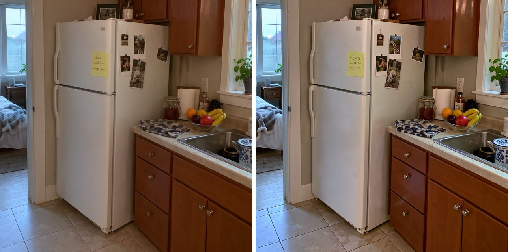

MOSS-Image for Forge Neo · 开源创作工具 · 社区请求与修复
MOSS扩展把参考图编辑接进Forge Neo，也补上新版加载冲突
2026-10-24T05:14:25Z ·

维护者提供的图生图输出对照；非编辑部实测，也不证明新版参考编辑的保真度。 ↗ 原始图证在原来的图生图入口改一处
MOSS-Image的Forge Neo扩展让用户继续使用熟悉的模型选择器和生成按钮。10月24日加入的图像编辑支持，针对的是已经有一张图、只想改衣服颜色或光线的人：将原图放进img2img，加载编辑LoRA，开启Enable Reference，再用文字描述要改什么。普通图生图把输入当生成起点，参考模式则把它用于约束新结果，两者不能只靠换一句提示词混用。扩展把开关放在设置中，经常切换的人可固定到快捷设置；做回普通图生图时，要把参考模式关掉。输入照片或插画之后，仍需要逐张检查未要求修改的部分。
参考图走自己的分支
这次支持不只是把LoRA文件加入菜单。提交说明披露，参考图先转换为潜变量，在模型里进入独立的前缀分支，保留自身位置编码，生成图与文字都可以读取它的键和值；这些参考信息在同一次采样中缓存，避免每一步重复准备。默认会把参考图长边缩至512像素，上限可在设置中调整，因此高分辨率原图不代表所有细节都原样进入参考分支。作者用INT8 SFT模型在RTX 2070上测试，也测试了与八步LoRA一起使用。公开实现能说明数据如何进入模型，但不能保证人物、背景和构图都不发生变化。
加载故障有了版本内修复
同一扩展此前暴露了一次兼容性摩擦：用户在Forge Neo 2.31加载MOSS模型时遇到freq_dim参数错误，另一个用户报告相同问题。社区给出手改loader.py的绕行办法，并有一位用户确认可用。维护者解释，Forge Neo新增自己的MOSS支持后，内置加载器误接了扩展配置；0.1.3修复了这条路径，更新扩展后不再需要保留手工补丁。0.1.4进一步提供后端选择，下一次生成即可切换扩展或内置支持，无需重启。这个过程把确认有效的临时修改与维护者发布的修复区分开，也说明用户升级主程序后为何需要同时检查扩展版本。
插画更适合，照片与多图仍需谨慎
编辑LoRA主要在插画上训练，维护者说照片通常能执行指定变化，但背景、取景和物体外形可能跟着漂移。虽然接口可以接入多张参考图，作者用两张图测试时得到拼贴，在八GB显卡上的耗时也明显增加，因此当前建议是一张参考图。八步LoRA减少等待，但精细纹理和文字不如常规步数干净；不能把更少的步骤等同于同等质量。扩展本身采用AGPL许可，模型权重另行下载，仍需配置文本编码器与自编码器。它减少重新搭建节点工作流的负担，却没有消除模型安装、版本匹配或对照原图验收这些工作。
← 回到项目，继续翻页